#oritech:recyclable/string
物品标签 · 34 个已收录成员
标签成员 (34)
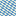
brewery:patterned_carpetbrewery:patterned_carpet
 白色地毯
白色地毯minecraft:white_carpet
 橙色地毯
橙色地毯minecraft:orange_carpet
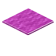
品红色地毯minecraft:magenta_carpet
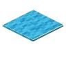
淡蓝色地毯minecraft:light_blue_carpet
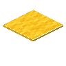
黄色地毯minecraft:yellow_carpet
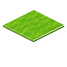
黄绿色地毯minecraft:lime_carpet
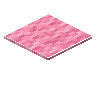
粉红色地毯minecraft:pink_carpet
 灰色地毯
灰色地毯minecraft:gray_carpet
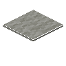
淡灰色地毯minecraft:light_gray_carpet
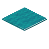
青色地毯minecraft:cyan_carpet
 紫色地毯
紫色地毯minecraft:purple_carpet
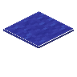
蓝色地毯minecraft:blue_carpet
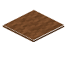
棕色地毯minecraft:brown_carpet
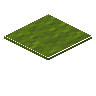
绿色地毯minecraft:green_carpet
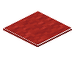
红色地毯minecraft:red_carpet
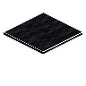
黑色地毯minecraft:black_carpet
 白色旗帜
白色旗帜minecraft:white_banner
橙色旗帜minecraft:orange_banner
品红色旗帜minecraft:magenta_banner
淡蓝色旗帜minecraft:light_blue_banner
黄色旗帜minecraft:yellow_banner
黄绿色旗帜minecraft:lime_banner
粉红色旗帜minecraft:pink_banner
灰色旗帜minecraft:gray_banner
淡灰色旗帜minecraft:light_gray_banner
青色旗帜minecraft:cyan_banner
紫色旗帜minecraft:purple_banner
蓝色旗帜minecraft:blue_banner
棕色旗帜minecraft:brown_banner
绿色旗帜minecraft:green_banner
红色旗帜minecraft:red_banner
黑色旗帜minecraft:black_banner
 画
画minecraft:painting